Hampir semua barang elektronik yang kita pakai melewati China di satu tahap yang sama: pemurnian bahan bakunya. Selama tahap itu lancar, harga murah dan pasokan cepat. Ketika tahap itu terganggu, pabrik di banyak negara ikut berhenti pada minggu yang sama.
Fokus: posisi China di rantai pasok, bahan baku kritis, dan pilihan strategi perusahaan.
Kelompok II: Muhammad Shafwan Ode · Rista Azizah Arilya · Ityama Munawar Dewi · Eka Sulistiya Rini · Gusti Putu Yuda Wirashana
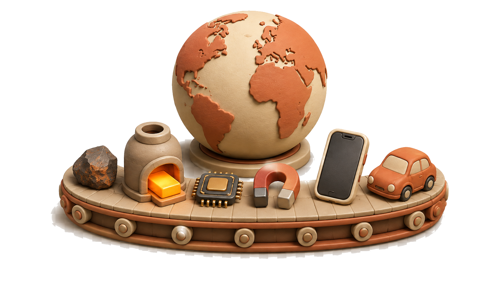
Strategi global yang tangguh bukan strategi yang menghapus semua risiko, tetapi strategi yang memastikan bisnis tetap berjalan ketika satu pemasok, negara, jalur logistik, atau teknologi terganggu.
Pesan utama presentasi ini
Peta jalan
Alurnya mengalir dari hulu ke hilir.
22 slide, empat babak. Kita mulai dari dasar rantai pasok, lanjut ke sebabnya, lalu diuji lewat empat organisasi nyata, dan ditutup dengan langkah yang bisa dijalankan manajer.
Sepanjang presentasi, AI berperan sebagai benang merah, yaitu penghubung antarbagian. Porsinya sengaja kami batasi kecil karena topik utamanya tetap rantai pasok.
01. DasarSlide 1-4 · pertanyaan dan tahapan rantai
02. Anatomi rantaiSlide 5-10 · China, sebabnya, mineral, tekanan AI
03. Studi kasusSlide 11-17 · Indonesia, TSMC, Apple, Toyota
Bisakah perusahaan tetap hemat tanpa menjadi rapuh?
Ada restoran yang cuma mengandalkan satu pemasok beras di ujung satu jalan. Harganya paling murah di kota, sampai suatu pagi jalan itu longsor dan dapur berhenti masak sebelum jam makan siang.
Perusahaan tetap boleh berbisnis dengan China. Yang mereka perlukan adalah pintu kedua, supaya satu gangguan tidak menghentikan seluruh produksi.
CostRiskSpeedTrustAIRules
Lima tahap satu rantai
Lima tahap yang membentuk satu produk.
Satu ponsel di tangan kita adalah hasil lima tahap kerja yang biasanya dikerjakan di lima negara berbeda. Kalau satu tahap berhenti, empat tahap lainnya ikut menganggur.
1. TambangBijih diambil dari bumi: nikel, tembaga, litium, dan sebagainya.
2. Pemurnian (refining)Bijih diubah jadi logam murni di smelter (pabrik pemurnian). Tahap ini paling sulit dipindah ke negara lain.
3. KomponenLogam murni diolah jadi chip, magnet, dan sel baterai.
4. Perakitan akhirKomponen dirakit jadi produk utuh: ponsel, mobil, panel surya.
5. Produk terpakaiBarang sampai ke tangan pengguna di seluruh dunia.
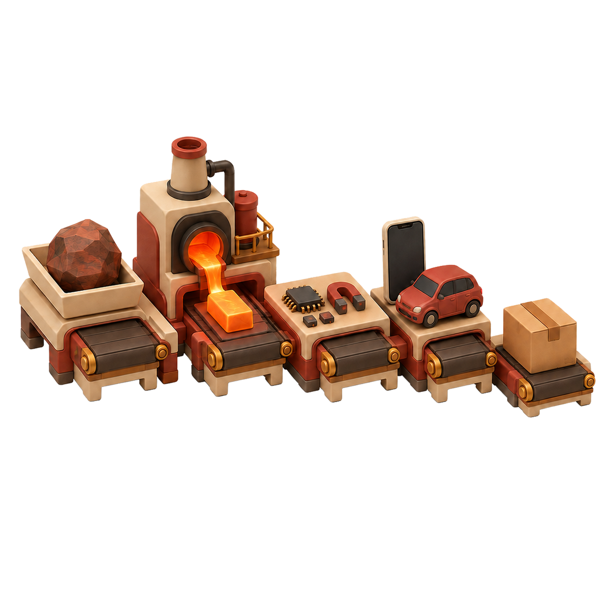
China di rantai pasok
19/20bahan yang dibutuhkan sektor energi, pertahanan, transportasi, semikonduktor, dan AI, paling banyak dimurnikan di China.
Kekuatan utama China ada di tahap pemurnian.
Bahan mentah bisa ditambang di banyak negara. Begitu masuk tahap pemurnian, sebagian besar jalurnya kembali menyempit ke fasilitas milik atau berbasis di China.
Seperti dapur pusat yang memasok banyak cabang restoran. Efisien selama menyala, tapi satu gangguan di sana terasa di semua cabang pada hari yang sama.
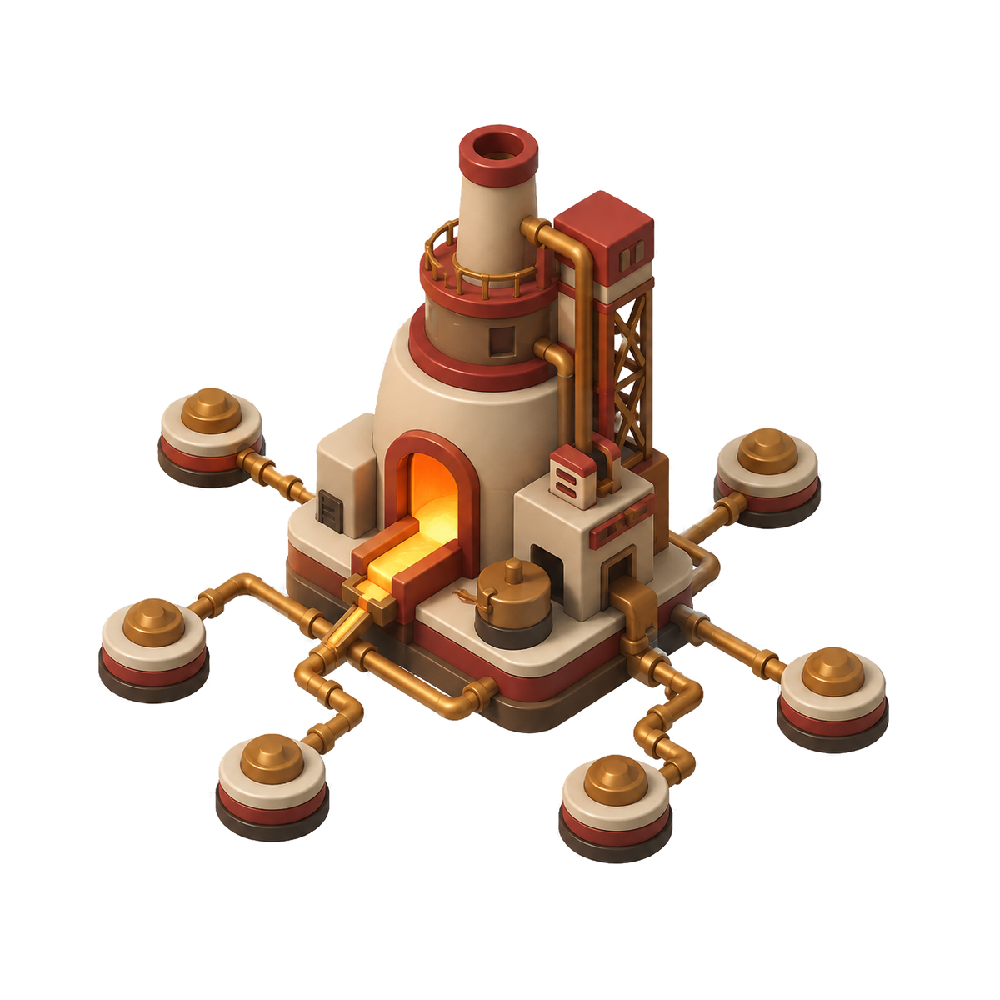
Sumber: IEA analysis, 2026. Angka aktual, bukan proyeksi.
IEA analysis (2026): China memimpin tahap pemurnian untuk 19 dari 20 mineral strategis, rata-rata pangsa pasar sekitar 70%. USGS Open-File Report 2026-1018 mencatat kendali ekspor sejak 2023 mencakup antara lain antimoni, galium, germanium, grafit, rare earths, telurium, dan tungsten. Bedakan tahap: penambangan, pemurnian, komponen, perakitan akhir.
Kenapa bisa China
Kenapa dominasi ini bisa terjadi?
China membangun posisi ini lewat kebijakan industri yang berjalan lebih dari tiga dekade, dimulai sejak awal 1990-an.
Pemerintah China berinvestasi di setiap tahap rantai nilai rare earth (logam tanah jarang): tambang, pemurnian, produksi, dan daur ulang (CFR, 2025).
Subsidi dan harga yang sangat rendah membuat pesaing di luar China sulit bertahan secara ekonomi (CFR, 2025).
Sejak bergabung ke WTO pada 11 Desember 2001, pangsa manufaktur China naik dari di bawah 9% (2004) menjadi 28% dari total dunia pada 2023 (WTO; CSIS ChinaPower, data World Bank, 2025).
Titik sempit terbesar hari ini ada di pemurnian, bukan di penambangan (CFR, 2025).
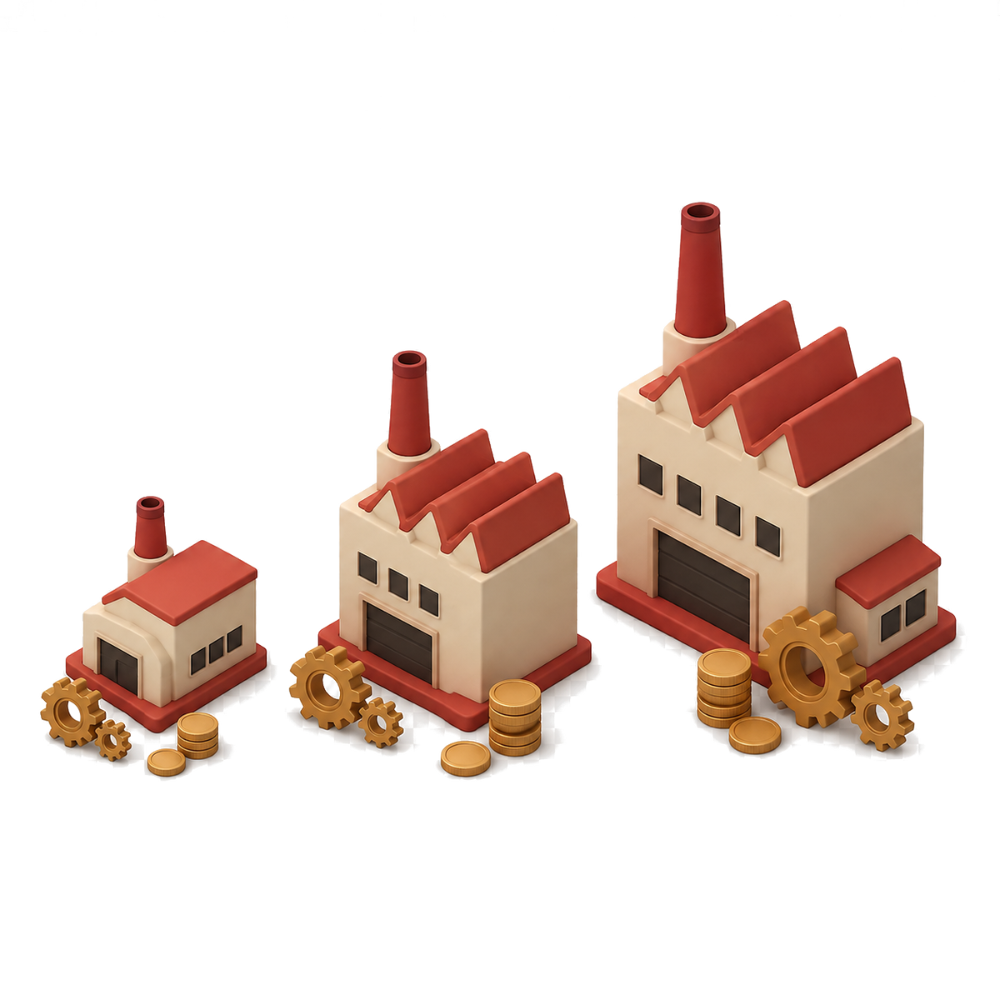
Timur Tengah punya minyak; China punya rare earths (logam tanah jarang).
Deng Xiaoping, kunjungan ke cekungan rare earth Baotou, 1992
Council on Foreign Relations, Michael Froman (17 Oktober 2025): dominasi China dibangun lewat kebijakan industri puluhan tahun dan investasi pemerintah di setiap tahap rantai nilai rare earth; China menguasai hingga 90% kapasitas pemrosesan dunia dan lebih dari 99% untuk tiga jenis rare earth yang dipakai magnet tahan panas (angka ini khusus rare earth, bukan seluruh mineral strategis). WTO: China anggota sejak 11 Desember 2001. CSIS ChinaPower Project, data World Bank World Development Indicators (diperbarui 25 November 2025): pangsa manufaktur global China di bawah 9% pada 2004 menjadi 28% pada 2023. Seluruh angka pada slide ini aktual, bukan proyeksi.
Bahan yang menentukan
Bahan baku adalah bumbu bagi teknologi.
Mineral strategis (bahan baku yang sulit diganti dan dipakai di teknologi kunci), termasuk rare earths, adalah bumbu yang menentukan apakah produksi bisa jalan. Tanpa satu bahan tertentu, dapur tidak bisa mengeluarkan menunya sama sekali, meski koki dan dapurnya sudah siap sejak pagi.
Chip & optik: silicon, gallium, germanium
Data centre & listrik: copper, aluminium, rare earths
Permintaan galium untuk pusat data pada 2030 bisa mencapai hingga 10% pasokan hari ini (proyeksi).
IEA, Energy and AI (2025): permintaan galium pusat data pada 2030 diperkirakan hingga 10% pasokan saat ini (proyeksi), sementara China memegang sekitar 95% pemurnian galium.
Kenapa permintaannya melonjak
AI menambah beban di rantai yang sama.
Pusat data AI butuh chip, listrik, dan pendingin dalam jumlah besar. Semua itu melewati tahap pemurnian dan komponen yang baru saja kita lihat.
1. Compute (komputasi)Chip dan server untuk melatih dan menjalankan model AI.
2. Power (listrik)Daya dan pendingin pusat data, kebutuhannya naik cepat.
3. Materials (bahan baku)Tembaga, aluminium, rare earths untuk kabel dan magnet.
4. Titik tekanPermintaan baru ini bertumpu di tahap pemurnian yang sama, yang sudah padat sejak sebelum AI booming.
Skala kebutuhan: IEA memproyeksikan konsumsi listrik pusat data global naik dari 485 TWh (2025) menjadi sekitar 950 TWh (2030); pusat data untuk AI tumbuh sekitar tiga kali lipat. Sumber: IEA, Key Questions on Energy and AI (2026). Angka ini proyeksi, bukan realisasi.
Ketika rantai benar-benar berhenti
Satu kendali ekspor, produksi berhenti di banyak negara.
Pada April 2025, China memperketat kendali ekspor rare earth. Dalam hitungan minggu, produksi otomotif di berbagai negara sempat terhenti karena pasokan magnet tidak sampai ke pabrik perakitan (IEA, 2026).
Ini sudah terjadi sekali. Mineral lain yang konsentrasinya mirip bisa mengalami hal yang sama.
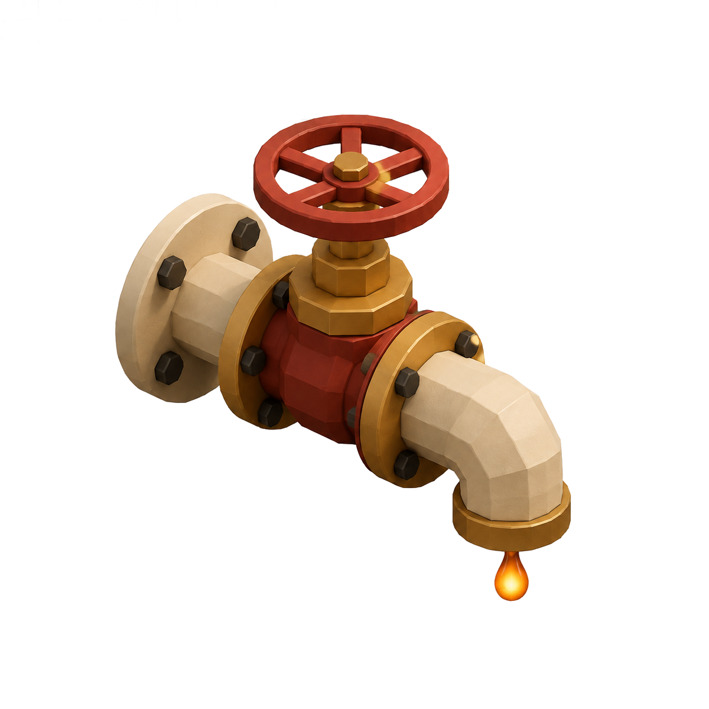
IEA (2026) mencatat kendali ekspor rare earth yang diperketat pada April 2025 sempat menghentikan produksi otomotif secara global. Ini contoh gangguan tingkat sistem, sudah terjadi, bukan skenario proyeksi.
Kamus istilah
Enam istilah yang akan sering kita dengar.
Istilah-istilah ini nanti muncul lagi di kasus Indonesia, TSMC, Apple, dan Toyota. Berikut artinya dalam bahasa yang lebih sederhana.
ReshoringMemindahkan produksi kembali ke negara asal perusahaan.
Near-shoringMemindahkan produksi ke negara yang secara geografis lebih dekat.
Friend-shoringMemilih negara pemasok yang secara politik dipercaya, meski jauh.
China+1Tetap memakai China, sambil menambah satu basis produksi di negara lain.
DiversifikasiMenambah jumlah pemasok independen di lebih dari satu tahap rantai.
DecouplingMemutus hubungan dagang dan produksi dengan China sepenuhnya. Tidak dipakai oleh keempat kasus di presentasi ini.
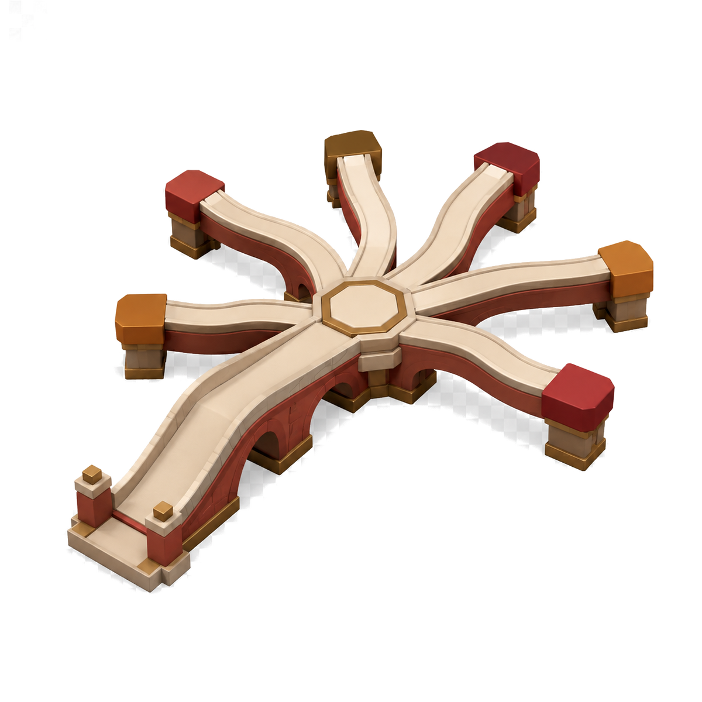
IMF, Supply Chain Diversification and Resilience (WP/25/102, 2025) memperingatkan friend-shoring dapat mengurangi diversifikasi bila hanya mengalihkan pasokan ke mitra yang sudah ada; hasil model menunjukkan trade-off nyata antara resiliensi dan biaya ekonomi.
Tahap rantai: tambang & pemurnian · Kasus 1 dari 4
Nikel → Baterai
Nikel adalah tepung. Nilai tambah nyata muncul kalau kita berhenti menjual tepung mentah dan mulai membuat roti dengan merek sendiri. Proses ini disebut hilirisasi (mengolah bahan mentah di dalam negeri sebelum dijual).
Keunggulan jangka panjang butuh lebih dari smelter: teknologi, ESG (standar lingkungan, sosial, dan tata kelola) yang kredibel, energi andal, dan mitra yang beragam. Risikonya, China dan Indonesia bersama masih memurnikan lebih dari 60% nikel dunia (IEA, 2025).
1. Jual bijih mentahNikel diekspor sebagai bahan mentah, nilai tambahnya kecil.
2. SmelterNikel diproses jadi logam setengah jadi di dalam negeri.
3. Sel bateraiHLI Green Power mulai produksi komersial pada 2024, kapasitas awal 10 GWh (ukuran kapasitas produksi baterai per tahun).
BKPM (2024) untuk kapasitas awal 10 GWh HLI Green Power (JV Hyundai, LG Energy Solution, Indonesia Battery Corporation). IEA Global EV Outlook 2025: Indonesia menyumbang lebih dari separuh penambangan nikel pada 2023, sementara China dan Indonesia bersama memurnikan lebih dari 60%.
Tahap rantai: komponen · Kasus 2 dari 4
TSMC
Pabrik chip lebih mirip rumah sakit khusus daripada gudang. Tidak bisa dipindah akhir pekan, dan perlu bertahun sebelum benar-benar beroperasi penuh.
Diversifikasi lokasi butuh semua ini sekaligus:
Modal besar dan tenaga ahli yang langka
Air dan listrik dalam jumlah besar
Ekosistem pemasok yang butuh bertahun untuk tumbuh
TSMC sudah mengerjakan diversifikasi ini sejak bertahun sebelum tekanan geopolitik naik.
TaiwanBasis utama, node (ukuran kehalusan chip) paling maju.
Arizona & JepangKapasitas tambahan di pasar mitra dekat.
NanjingNode lebih lama, pasar China tetap dilayani.
DresdenFab (pabrik pembuat chip) spesialis, masih dalam pembangunan.
TSMC Annual Report 2025: kapasitas manufaktur tercatat di Taiwan, China (Nanjing), Arizona, dan Jepang, serta kemajuan menuju fab spesialis di Dresden, Jerman.
Tahap rantai: perakitan akhir · Kasus 3 dari 4
Apple
Apple menulis di laporan tahunannya (Form 10-K FY2025): sebagian besar manufakturnya dikerjakan mitra alih daya di China daratan, India, Jepang, Korea Selatan, Taiwan, dan Vietnam.
Apple menambah dapur kedua di India dan Vietnam, tanpa meninggalkan dapur utama di China. China+1 berarti membangun kemampuan pemasok dari nol di lokasi kedua, bukan cuma memindahkan alamat pabrik.
ChinaIndiaVietnamJapanKoreaTaiwan
ChinaVietnamIndiaJapanKoreaTaiwan
Apple Form 10-K FY2025: mayoritas manufaktur dikerjakan mitra alih daya terutama di China daratan, India, Jepang, Korea Selatan, Taiwan, dan Vietnam; Apple memperingatkan perubahan rantai pasok butuh waktu dan sumber daya besar. Apple Newsroom India (2026) untuk pengembangan kemampuan di 25+ lokasi pemasok. Apple tidak menyatakan keluar dari China.
Tahap rantai: operasi pabrik (hilir) · Kasus 4 dari 4 · 1/3
1-4bulan stok semikonduktor yang dinyatakan Toyota dalam BCP (business continuity plan), rencana agar produksi tetap jalan saat krisis, tahun 2021.
Toyota
2011. Gempa dan tsunami Jepang mengungkap titik lemah pemasok chip lapis dua dan tiga.
2012-2020. Toyota membangun sistem RESCUE (Reinforce Supply Chain Under Emergency) untuk visibilitas hingga pemasok tier-2 dan tier-3.
2021. Toyota menyatakan stok semikonduktor 1-4 bulan dalam BCP-nya.
2021-2022. Gangguan berlanjut. Toyota tetap memakai just-in-time (JIT), yaitu memesan komponen tepat saat dibutuhkan, untuk sebagian besar komponen lain.
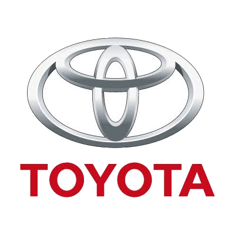
Bagian 1 dari 3: JIT, gempa 2011, dan RESCUE di tahap operasi pabrik.
Toyota Times, wawancara CFO (2021) untuk angka stok 1-4 bulan; Toyota Integrated Report 2024 (sistem supply-demand berbasis AI). Sistem RESCUE mengikuti Makalah Kelompok II (2026), Bab 3.3, berdasarkan pengalaman Toyota pasca gempa Jepang 2011.
Tahap rantai: jaringan pemasok & lokasi produksi · Kasus 4 dari 4 · 2/3
China+1 & Friend-shoring
China tetap jadi pasar dan basis produksi penting bagi Toyota. China+1 di sini bukan keluar dari China, melainkan menambah kapasitas di Asia Tenggara, Jepang, Amerika Utara, dan India supaya satu lokasi tidak jadi titik gagal tunggal.
Friend-shoring mendorong Toyota membangun hubungan jangka panjang dengan pemasok dari negara yang hubungan dagangnya lebih stabil, walau biayanya belum tentu paling rendah. Pertanyaan sourcing bergeser dari “di mana biaya paling murah?” menjadi “di mana pasokan paling aman dan bisa dipertahankan jangka panjang?”
ChinaAsia TenggaraJepangAmerika UtaraIndia
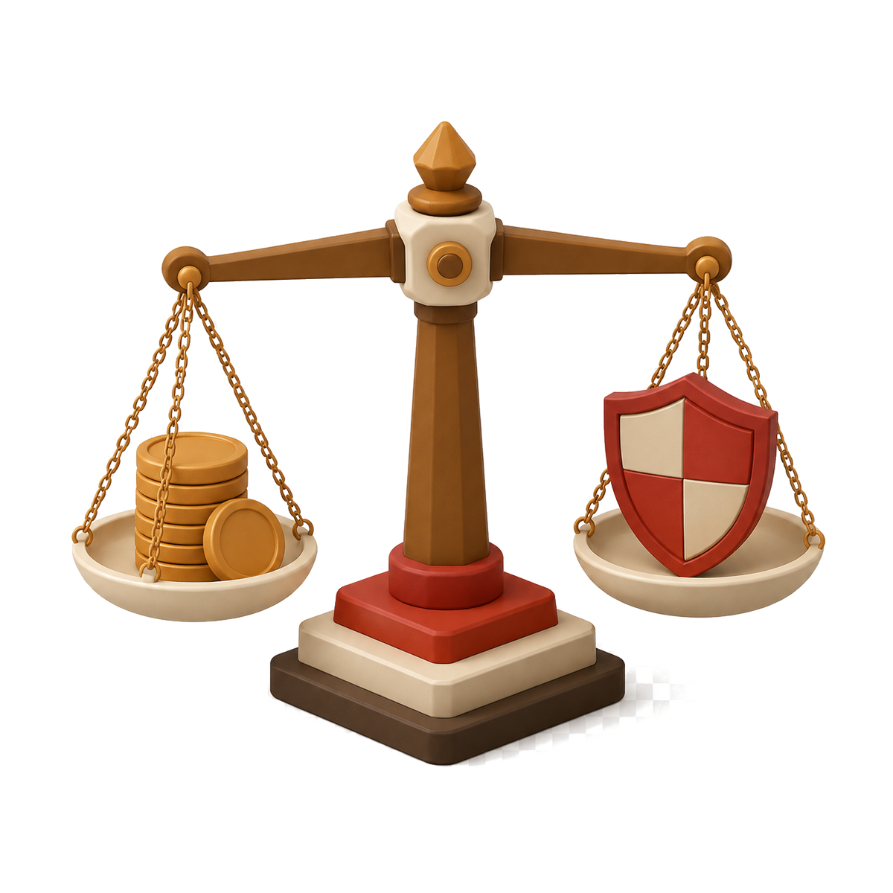
EfficiencyPersediaan rendah, biaya rendah, produksi terkoordinasi, pemasok tunggal yang efisien.
Makalah Kelompok II (2026), Bab 3.4-3.5 & 4.2: jaringan lokasi Toyota (China, Asia Tenggara, Jepang, Amerika Utara, India) dan trade-off efficiency-resilience, merujuk Christopher, Logistics & Supply Chain Management (2016).
Tahap rantai: mineral & strategi keseluruhan · Kasus 4 dari 4 · 3/3
Mineral EV dan ringkasan strategi Toyota.
Elektrifikasi menambah kebutuhan lithium, nickel, dan cobalt untuk baterai, plus rare earth untuk motor listrik. Toyota menjalankan due diligence atas mineral ini.
Bencana alamSistem manajemen risiko dan RESCUE. Tujuan: mempercepat pemulihan.
Ketegangan geopolitikChina+1 dan diversifikasi global. Tujuan: mengurangi geopolitical risk.
Hubungan antarnegaraFriend-shoring. Tujuan: meningkatkan keamanan pasokan.
Kelangkaan bahan bakuPengamanan strategic minerals. Tujuan: menjamin pasokan jangka panjang.
Pemasok tingkat bawahSupply chain visibility. Tujuan: mengetahui risiko tier-2 dan tier-3.
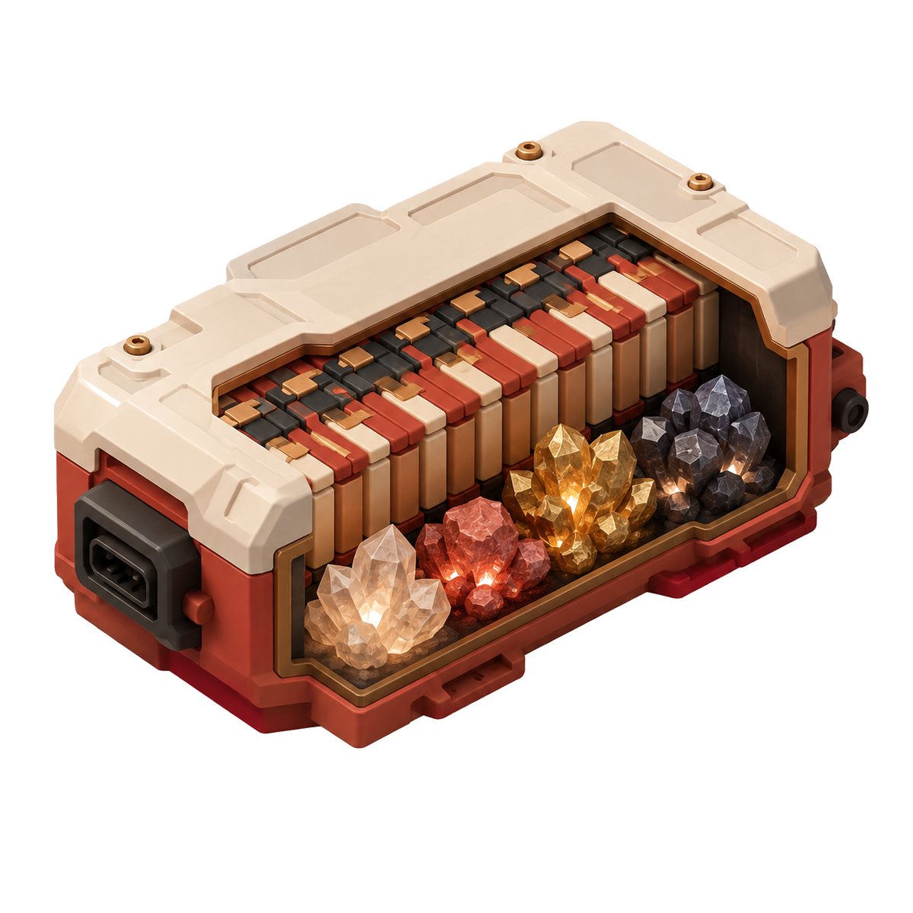
Toyota Integrated Report 2025 (survei rantai pasok bahan baterai: kobalt, litium, nikel, grafit). Ringkasan strategi mengikuti Makalah Kelompok II (2026), Bab 3.6-3.7.
Sintesis lintas kasus
Empat organisasi, empat tahap rantai yang berbeda.
Keempat kasus tidak menjawab masalah yang sama. Disusun berurutan, dari hulu ke hilir, semuanya membentuk satu gambar utuh tentang di mana risiko bisa dikelola.
Cara paling berguna membaca keempat kasus ini: perhatikan titik intervensi yang dipilih tiap organisasi, bukan cuma hasil akhirnya.
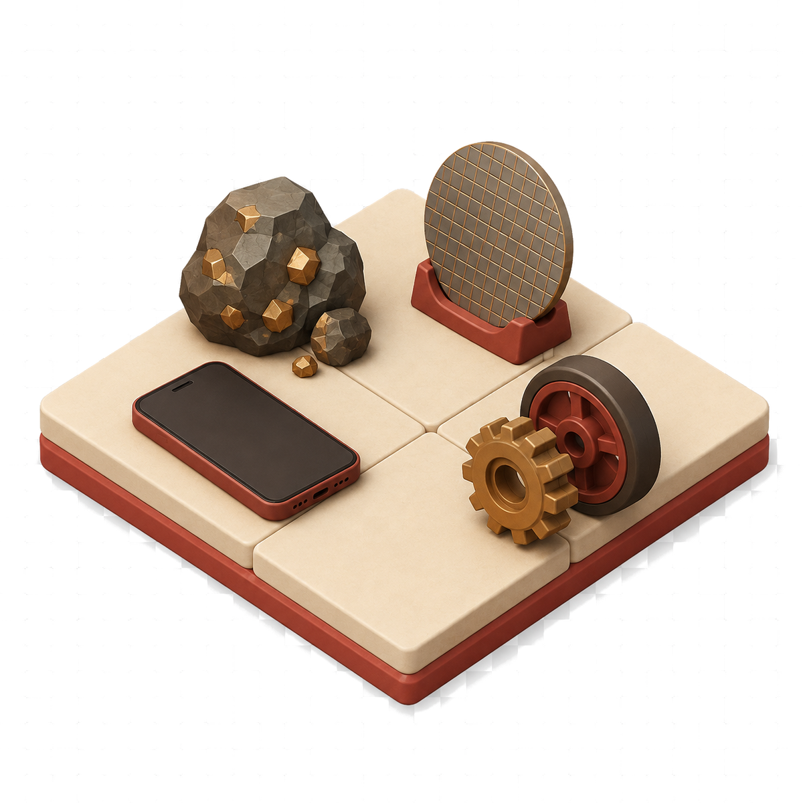
IndonesiaHilirisasi nikel menuju sel baterai; peluang nilai tambah dengan risiko konsentrasi pemurnian.Tahap: tambang & pemurnian
AppleChina+1 lewat India dan Vietnam; membangun kemampuan pemasok, bukan sekadar lokasi baru.Tahap: perakitan akhir
ToyotaRESCUE pasca-gempa, China+1, friend-shoring, dan due diligence mineral EV; JIT tetap jalan sambil menambah ketahanan.Tahap: operasi pabrik (hilir)
Pemisahan analitis mengikuti standar evidence pada research brief: resiliensi operasional (Toyota), diversifikasi korporat (Apple), kapasitas semikonduktor (TSMC), dan strategi industri nasional (Indonesia) tidak boleh dicampur sebagai bukti untuk klaim yang sama.
Kerangka manajemen
Hadapi rantai pasok seperti menghadapi musim hujan.
AI membantu membaca awan; manajemen tetap harus menyiapkan payung, jalan alternatif, dan stok kebutuhan pokok.
01. PetakanKenali pemasok hingga tambang, pemurni, pelabuhan, fab, dan grid.
02. DiversifikasiUji pemasok, rute, dan teknologi alternatif sebelum krisis.
03. Siapkan buffer (stok cadangan)Simpan stok atau kapasitas untuk bagian yang sulit diganti.
04. KelolaGunakan AI dengan akuntabilitas, ESG, dan kontrol keamanan.
Kerangka disusun dari IEA (2025-2026), IMF (2023, 2025), dan USGS (2026). AI dipakai untuk sensing, peramalan, simulasi, dan alokasi, dengan akuntabilitas eksekutif tetap di tangan manajemen atas trade-off, hak asasi, dampak lingkungan, keamanan siber, dan pengembangan pemasok.
Batas argumen
Apa yang tidak kami klaim.
Posisi kelompok tetap: diversifikasi strategis dengan pemetaan ketergantungan yang transparan, bukan keluar dari China. Namun posisi itu punya harga dan batas, dan kami ingin menyebutnya terang-terangan.
Diversifikasi menaikkan biaya dan butuh waktu. IMF mencatat trade-off nyata antara resiliensi dan biaya ekonomi.
Friend-shoring bisa menciptakan konsentrasi baru bila hanya mengalihkan pasokan ke mitra yang sudah ada.
Pemasok lapis satu (tier-1) di luar China masih bisa bergantung pada input olahan, magnet, grafit, atau peralatan dari China.
Angka pada deck ini mencakup proyeksi bertahun tertentu, bukan kepastian. AI mempercepat pembacaan risiko, bukan menambah pasokan mineral.
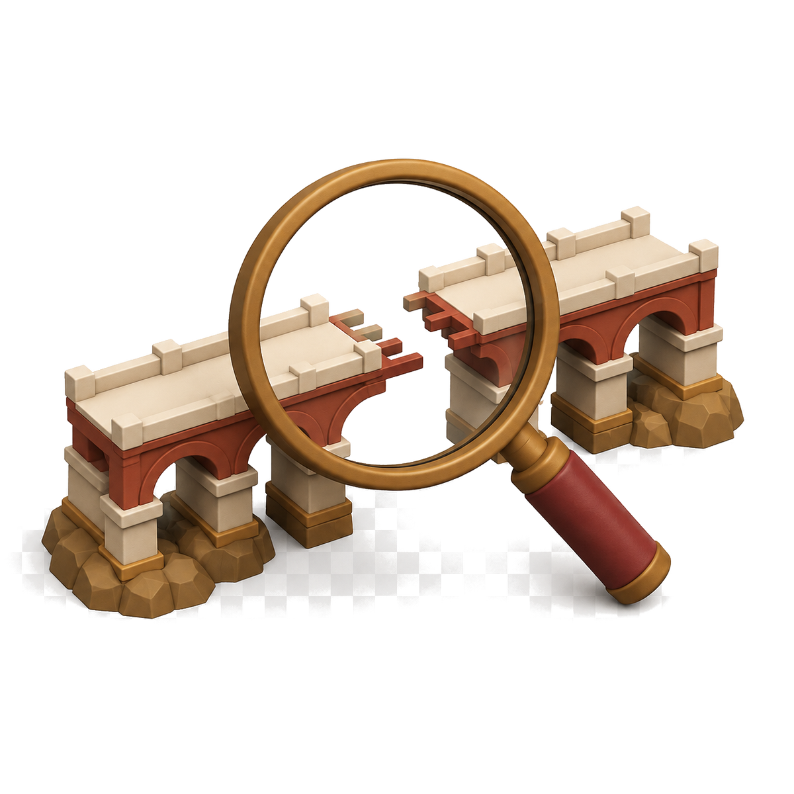
Kami klaimKetergantungan pada satu titik kegagalan adalah risiko strategis yang bisa dikelola.
Bukan klaim kamiBahwa ada perusahaan yang sudah benar-benar lepas dari China.
Bukan klaim kamiBahwa pabrik, MOU, atau investasi yang diumumkan otomatis berarti rantai pasok sudah terdiversifikasi.
IMF, Supply Chain Diversification and Resilience (2025); IMF, Geoeconomic Fragmentation and FDI, WEO Bab 4 (2023); USGS Open-File Report 2026-1018 (2026); IEA (2026) mencatat kendali ekspor rare earth April 2025 sempat menghentikan produksi otomotif secara global.
Proyeksi 2026-2029
Ke mana arah rantai pasok ini dalam 3-4 tahun?
Teknik: ekstrapolasi tren dari data aktual IEA/USGS, dipadukan scenario planning. Ketiga jalur di bawah berangkat dari titik yang sama tahun 2026, lalu berpencar sampai 2029.
Status quoPermintaan AI dan EV naik lebih cepat dari kapasitas pemurnian baru di luar China; pangsa China bertahan tinggi.
Diversifikasi terakselerasiKapasitas pemurnian baru di Indonesia, AS, Jepang, dan Uni Eropa mulai beroperasi 2027-2028; pangsa China turun bertahap.
Eskalasi berulangKendali ekspor diperketat lagi seperti April 2025; gangguan produksi berulang tiap 1-2 tahun, pangsa naik-turun tajam.
Status quo, garis putus abu
Diversifikasi terakselerasi
Eskalasi berulang, garis putus merah
Angka 485 TWh (2025) dan sekitar 950 TWh (2030) adalah proyeksi aktual IEA, Key Questions on Energy and AI (2026), sama seperti dikutip di slide Tekanan AI. Kurva pangsa pemurnian China 2026-2029 adalah skenario ilustratif kelompok, disusun dari arah kebijakan pada IEA, CFR, dan USGS yang sudah dirujuk di deck ini, bukan angka resmi dari lembaga tersebut.
Kesimpulan
Jangan meninggalkan China. Hilangkan kerapuhan.
Perusahaan yang unggul punya lebih dari satu jalur pasokan untuk setiap tahap penting. Kalau satu jalur tertutup, produksi tetap bisa berjalan lewat jalur yang lain.
China+1 baru menambah satu pemasok. Target yang sebenarnya lebih besar: setiap tahap penting punya minimal dua jalur yang sudah pernah diuji saat krisis.
PetakanDiversifikasiSiapkanKelola
Core sources: IEA Energy and AI (2025/2026); IEA Global Critical Minerals Outlook (2025/2026); IMF Supply Chain Diversification and Resilience (2025); USGS (2026); CFR (2025); WTO; CSIS ChinaPower (2025); Toyota, Apple, TSMC, BKPM primary reports.
Rujukan
Sumber primer dan otoritatif.
IEAEnergy and AI (2025); Key Questions on Energy and AI (2026); Global EV Outlook (2025); analisis harga tembaga dan tekanan strategis smelter (2026).
IMFSupply Chain Diversification and Resilience, WP/25/102 (2025); Geoeconomic Fragmentation and Foreign Direct Investment, WEO Bab 4 (2023).
USGSOpen-File Report 2026-1018 (2026): produksi mineral global dan cakupan kendali ekspor sejak 2023.
CFRMichael Froman, “China, the United States, and a Critical Chokepoint on Minerals” (17 Oktober 2025).
WTOKeanggotaan China resmi sejak 11 Desember 2001.
CSISChinaPower Project, “Measuring China's Manufacturing Might,” data World Bank World Development Indicators (diperbarui 25 November 2025).
ToyotaToyota Times, wawancara CFO (2021); rilis produksi (2022); Integrated Report 2024 dan 2025.
AppleForm 10-K FY2025; Apple Newsroom India (2026); pembaruan lingkungan (2025).
TSMCAnnual Report 2025: kapasitas Taiwan, Nanjing, Arizona, Jepang, dan rencana Dresden.
BKPMSiaran pers produksi massal baterai kendaraan listrik (2024).
Batas riset: 1 September 2026. Setiap angka pada deck ini ditandai tahun dan statusnya, aktual atau proyeksi. Klaim perusahaan tidak diperluas melebihi pernyataan sumber primernya.